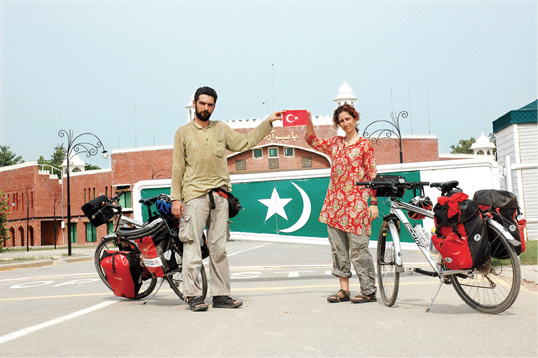

PAKİSTAN — HİNDİSTAN, 1 AĞUSTOS
Pakistan’ın Lahore kentindeki karmaşa ve pislik sınıra doğru gittiğimiz saatler içinde, daha da çekilmez hal alıyor. Hindistan’a, sınıra doğru ilerleyen bir yol inşaatının tam ortasındayız. En ücra köy yollarına benzeyen tamamen toprak ve taşlık bir araziden geçiyoruz. Kelimelerin yetersiz kaldığı bir sefalet ve pislik. Bisikleti elinize alıp yürüseniz bile birileri üzerinize doğru geliyor yine de. Şu yol bir bitse, bir bitse… Hindistan’a geçer geçmez, Pakistan’daki kötü anılarımızı, sadece yazmak için hatırlamak üzere zihnimin en derinlerine gömeceğim.
Sınırdan önce birkaç askeri nokta geçiyoruz. Elimizde kalan son Pakistan paralarını değiştirmek isteyen simsarlarla anlaşamıyoruz. Sınırda kitap satan adam, birkaç kelime Türkçe biliyor. Bana İstanbul’la ilgili kitaplar gösteriyor. Dayıcım zaten oradan geliyoruz, zor kaçmışız İstanbul’dan ne İstanbul’u yahu. Sonunda Lonely Planet’in Hindistan kitabını elimdeki son Pakistan rupileriyle alıyorum. Gümrük noktasına uğruyoruz. Karşılaştığımız diğer resmi görevliler gibi buradakiler de Türkiye’den olduğumuzu duyunca hızla bürokratik işlemleri yapıyor ve Türkiye’ye olan sevgilerini anlatıyorlar. Burada bir kadın görevli de var. İlk kez üniformalı bir kadın görüyoruz. Sınır kapısı için bir imaj olarak yerleştirilmiş gibi geliyor bize. Bisikletleri gümrük binasından içeriye bile almıyoruz. Pakistan sınırından da çanta açma kapama derdiyle uğraşmadan geçip Hindistan sınırına doğru ilerliyoruz.
Hindistan’ın, Amritsar kentine mi ilerlesek, yoksa buradaki sınır otelinde mi kalsak karar veremiyoruz önce. Sebebi, aslında kâğıt üzerinde hâlâ savaş durumunda olan Pakistan ve Hindistan’ın, burada her gün yapılan sınır kapanış törenlerini izlemek. Karşılıklı bir gövde gösterisine dönüşen bu olayın izlenmesi için iki taraf da neredeyse küçük stadyumlar inşa etmiş. Gözyaşları içinde, karşılıklı bağrışıp, milli marşlarını söyleyip sloganlar atarak yapılan askeri törenler, milli bir şenlik, gövde gösterisi, sidik yarışı havasında geçiyor. Hatta sınır bunun için erken kapatılıyor. Burada kalırsak bu töreni de izlemek istiyoruz. Ama Amritsar’a ulaşıp yarın bu tören için geri de gelebiliriz. Hindistan topraklarına geçelim de bakarız diyoruz. Karşıya bir geçelim de… Pakistan tarafında yarın sabah uyandığımızda neyle karşılaşacağımız belli olmaz. Rehber kitaplarda Pakistan sınırı için kapanma saati 16:30, Hindistan için 17:00 olarak belirtilmiş. İlginç şekilde buradaki askerler görüntü almamız konusunda hiç de yasakçı değiller. Biz de sınırlardan beş dakikada geçmenin rahatlığı içinde geziniyoruz ara bölgede. Saat 16:35’te ara bölgeden de çıkıyoruz. Hindistan tarafı gerçekten çok daha bakımlı ve yeni binalarla dolu. Askeri noktada klima bile var. Burada bazı işlemler ve kayıtlar alınıyor. İlerideki gümrük noktasına gidiyoruz. Bisikletleri içeri sokmadan halledeceğimiz düşüncesindeyiz, daha önceki sınırlardan alıştığımız gibi. Ancak binada hiç turist yok ve sadece iki görevli var. Çok zor anladığım İngilizceleriyle sınırın kapandığını söylüyorlar. Pakistan’a geri dönmeliymişiz. Nee, bana ikinci giriş hakkımı yaktıracaklar.
Duvardaki saate bakıyorum 17:10, benim saatim ise 16:40. Sonradan anlıyoruz ki Pakistan ile Hindistan’ın resmi ülke saatleri arasında yarım saat fark var. Yuh diyorum ama adamlar kâğıt üzerinde haklılar. Pakistan’da saat 16:30 iken 25 metre ileride Delhi saati kullanıldığı için saat zaten 17:00. Elimizdeki iki rehber kitap da bu noktayı atlamış. Ya da ben dikkat etmemişim. Biraz yalvar yakar oluyoruz. Görevlilerde rüşvet ister gibi bir hava var. Yanımdaki paralar 100’lük dolarlar halinde. Sadece 4 tane
bir dolarım var. Utana sıkıla hayatımın ilk rüşvetini veriyorum. 4 dolara bile seviniyor görevliler. Açıktan açığa da alıyorlar. Bir sürü belge dolduruyoruz ve damgalarımızı alıyoruz. İlk kez burada 2 arka çantamızın kapakları açılıyor ve en üstten birkaç eşyaya üstün körü bakılıyor. Ben bu sırada damgalarımızı alma telaşındayken İnci tek
başına bunlarla muhatap oluyor maalesef. Çantaları dağıtıp tekrar toplamak, sorulara cevap vermek ona kalıyor.
İşte Hindistan’dayız. Karşı taraftaki tribünlere doğru gidiyoruz. Evet burada törenleri izlemek için stadyum benzeri yükseltiler inşa edilmiş. İçinde turistlerin de bulunduğu çok sayıda insan sınır kapanış törenini izlemek üzere toplanmış. Sayıları binlere yakın. Askerlerle birbirlerini ittirip duruyorlar. Pakistan’dan Hindistan’a geçen sadece biz varız. Günün ilk siftahını yapmak istermişçesine saldıran simsar ordusunun taarruzuna uğruyoruz. Bağırıp çağırıyorum ve sıyrılıyorum hepsinden. Bu insan kalabalığını yararak biraz uzaklaşıyoruz. Çantaların güvenliğini bu kalabalıkta sağlayamayız. Sonra ben bisikletsiz olarak geri dönüyorum. Para bozdurup yiyecek bir şeyler alıyorum. Amritsar’a kadar sürüyoruz sonra. Güneş tam arkamızda ufka doğru alçalıyor. Biz yine doğuya doğru pedal çeviriyoruz. Yol boyu yüzlerce araç sınıra akmaya devam ediyor. Ters istikamette neredeyse sadece biz. Bu yolculukta en çok görmek istediğim yer olan “Altın Tapınak’a” doğru, akşam rüzgârında savrulan pirinç tarlalarının uğultusu eşliğinde ilerliyoruz.
Arkamızdaki kızıllık azalırken altın tapınağın parlak silueti belirginleşiyor zihnimizde, yorgun bacaklarımız bu hayalle tekrar güç kazanıyor. Hayallerimiz bizden daha hızlı ilerliyor, onlara yetişmek için pedallara yükleniyoruz.

Pakistan - Hindistan sınırı
“Bezgin Bekir” lik hallerimiz, derbeder ama mutluyuz.